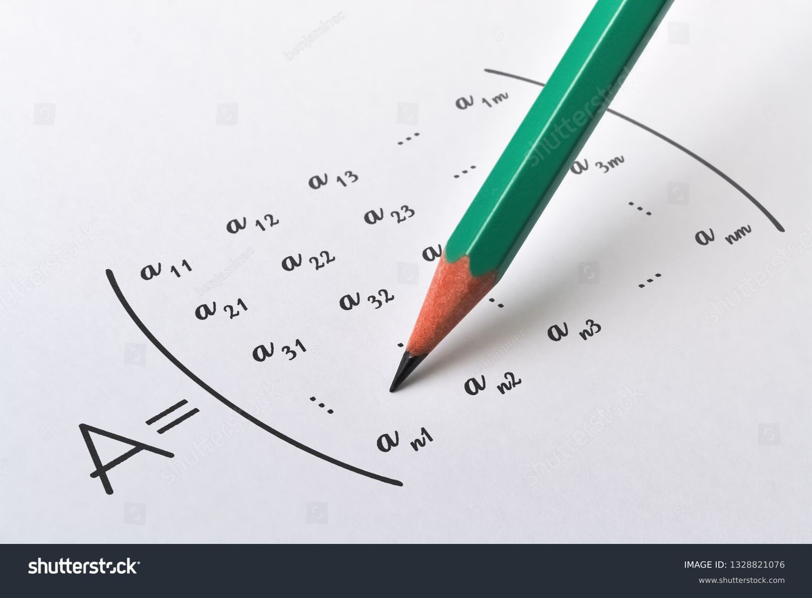

PROGRAMACION WEB-II. La actividad curricular de Introducción a la Computación, se desarrolla en el primer semestre delPlan de estudios, pertenece al área curricular de Formación Disciplinar, al ciclo inicial y es decarácter teórico-aplicada.Esta actividad curricular entrega los conceptos y fundamentos básicos de la computación y permiteel estudio de las diferentes tendencias y temas actuales. Además se prepara al estudiante paraenfrentar y resolver problemas de índole matemático y científico a través de algoritmos.
ALGEBRA LINEAL. Se entiende por álgebra lineal a la rama del álgebra que se encarga del estudio de matrices, vectores, espacios vectoriales y ecuaciones de tipo lineal. Se trata de funciones matemáticas que ocurren entre vectores dentro de condiciones de linealidad, es decir, la serie de sucesiones que son consecuencia proporcional de una causa.
Este tipo de álgebra es un área fundamental dentro de las matemáticas, en especial en el campo de la geometría, pues permite definir objetos como líneas, planos o rotaciones. También es indispensable en el campo de la ingeniería, pues facilita el cálculo, modelación y computación de fenómenos naturales.

ESTADISTICA I. La estadística es una rama de las matemáticas que te permite recopilar, organizar y analizar datos según la necesidad que tengas, por ejemplo: obtener un resultado, comparar información, tomar mejores decisiones, entre muchas cosas más. La estadística sirve para conocer comportamientos, aspectos de la industria y tendencias en el mercado.
Ese es el caso de Netflix, la plataforma de películas y series que reúne datos de sus usuarios para saber cuál es el contenido que más les gusta. Así, pueden decidir cuál será la película del momento o qué serie lanzarán el próximo mes.

CALCULO II. En esta asignatura se estudian los temas clásicos de la integración de funciones de una variable real y sus aplicaciones más relevantes. Se inicia con el concepto de antiderivada, como operación inversa a la derivación, se presenta la integral indefinida de funciones algebraicas y trascendentes, así como los principales métodos de integración. Se estudia la integral definida, los teoremas fundamentales del cálculo y algunas aplicaciones en los que la integración definida, apoyada en los métodos de integración indefinida, es clave para su solución, estableciendo una relación profunda con otras áreas del conocimiento como es el caso de la física y la geometría entre otras. Finalmente, se estudian las series y los principales criterios de convergencia.
PROGRAMACION II. Los conocimientos de programación básica (Programación estructurada y programación modular), adquiridos en la materia de un nivel anterior, INF-111, deben mejorarse y ampliarse con nuevas herramientas de programación como es el Paradigma Orientado a Objetos, para la solución de problemas reales y complejos.
El Objeto de la materia es el desarrollo de programas bajo el Paradigma Orientado a Objetos en Lenguajes de Programación Orientado a Objetos, caso JAVA y TC++